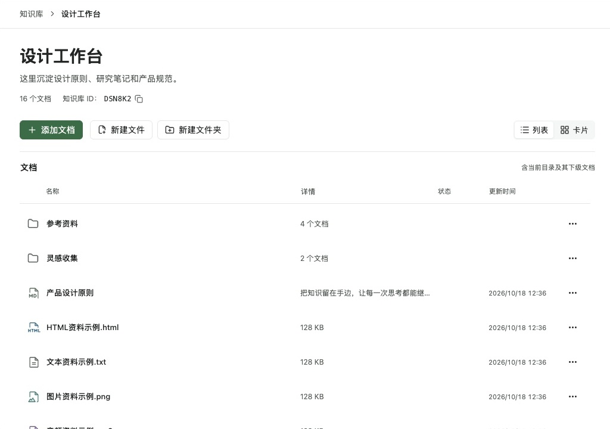
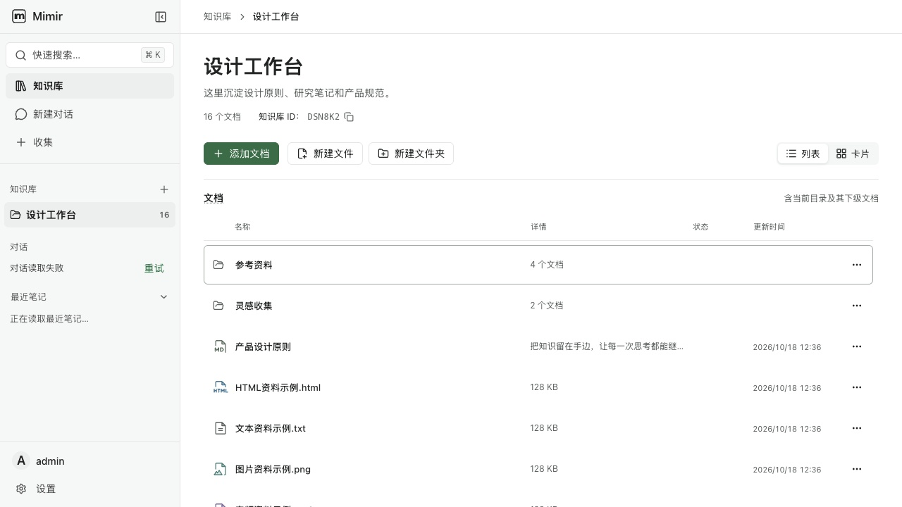
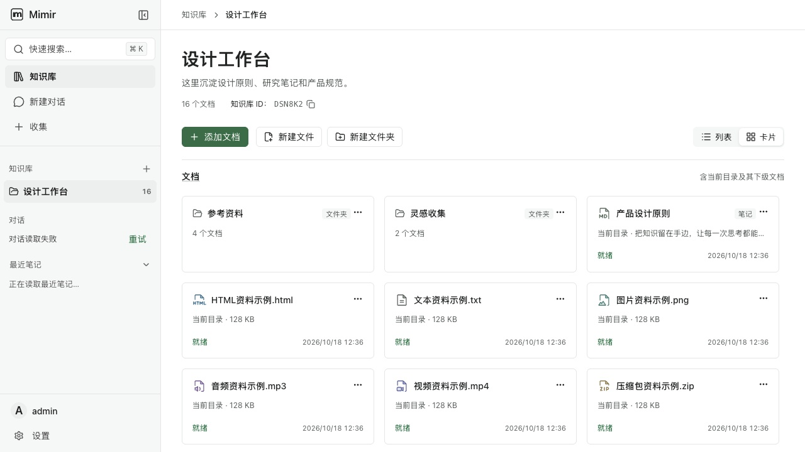
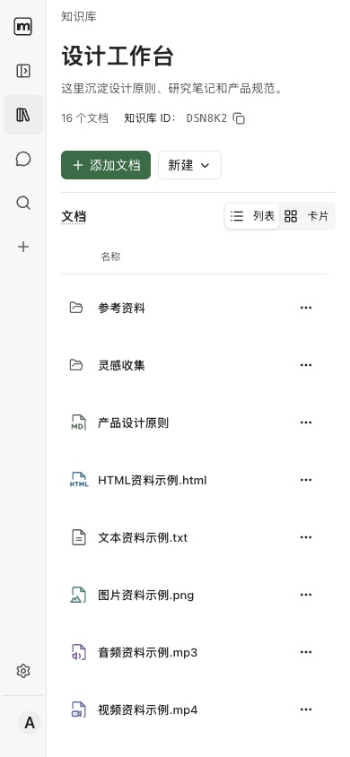
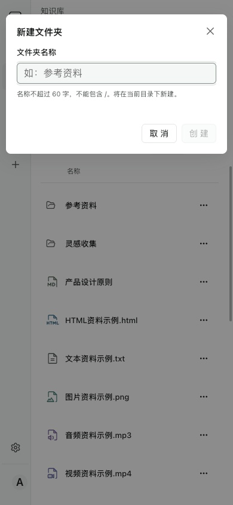
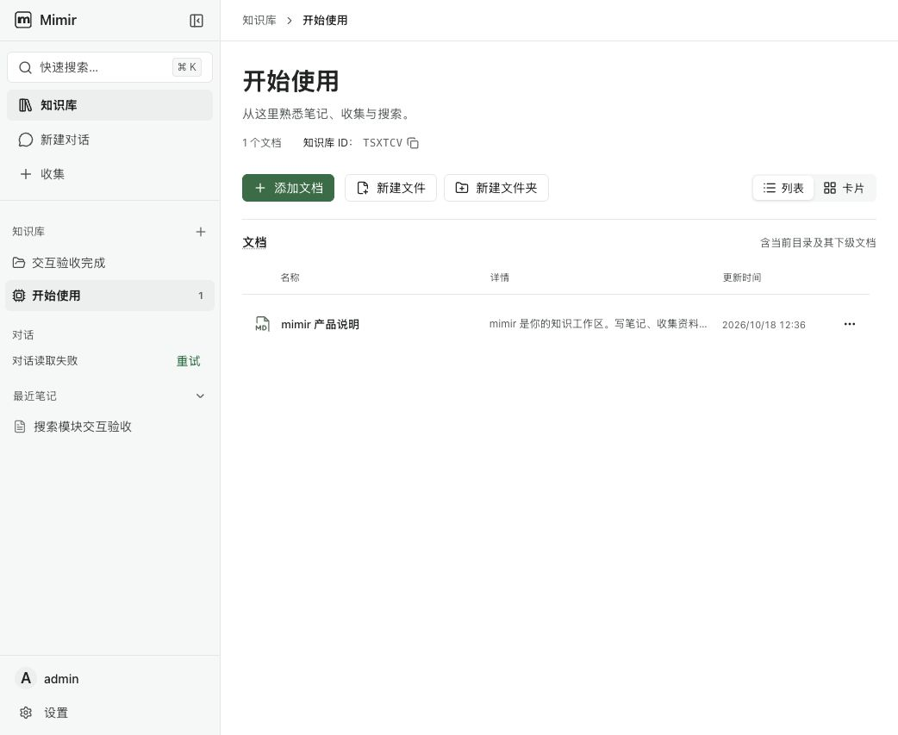

2026-10-18 · revision2 A（Phosphor duotone）。参考图为1024px内容画布；产品截图为1280px视口（256px侧栏+1024px内容），请对照内容区域。模拟内容相同，侧栏沿用产品真实宿主。截图是代表抽验，58组/299状态并非全部GUI测试。






最终尺寸见desktop-list-final.json、narrow-dialog-final.json、hover-light-final.json；深色/低高度/错误恢复证据及边界见上级browser-qa.md。全仓门仍受范围外lint与TS2550阻断。